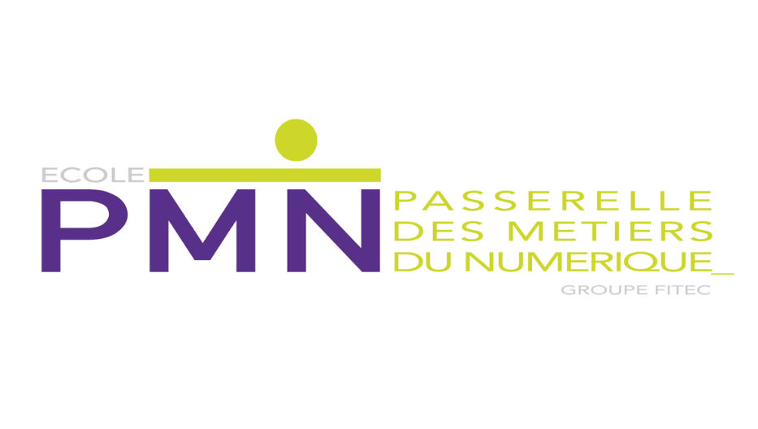
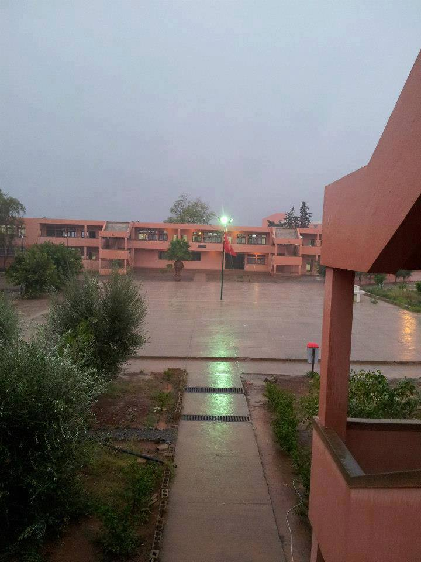

L'école PMN, une école spécialisé dans les domaines du numérique, aussi reconnu dans le monde de travail et certifié par le ministère du travail, cette école est formatrice vers le marché du travail,et il offre des formation du bachelor jusqu'au Master,c'est où Ziad suit ses étude en première année bachelor informatique, Ziad a acquérit grâce à cette école beaucoup de compétences essentielles pour ce domaine, aussi Ziad a eu le plaisir de rencontrer des professeurs avec différentes expériences qu'ils étaient génereux avec les étudiants et qu'ils ont donné beacoup de conseil à Ziad et ses collègues, grâce à cette école Ziad s'est retourné vers le marché du travail et il a commencé à penser avec une façon plus professionnelle et plus résonnable, donc pour lui intégrer cette école c'était un pas important! dans sa vie

Lycée Allaymoune , est un lycée au Maroc exactement à Berkane, ce lycée était connu par ses magnifique maîtres et maîtresses, et c'est où Ziad a réussi son baccalauréat, pour Ziad, les 3 ans qui a passé sur ce lycée étaientt les meilleures de toute sa scolarité, car c'est là où il a appris beaucoup de chose et c'est le premier endroit où il a assistait à beaucoup d'activités,c'est aussi où il a rencontré la majorité de ses amis, pour lui, ce lycée était son point de départ vers le changement de manière de pensé et aussi le changement d'une grande parti de sa vie ,il a grandit là-bas et il a appris tous ce qu'il l'a aidé pour continuer ses études supérieures,ce lycée est beaucoup apprecié par Ziad.